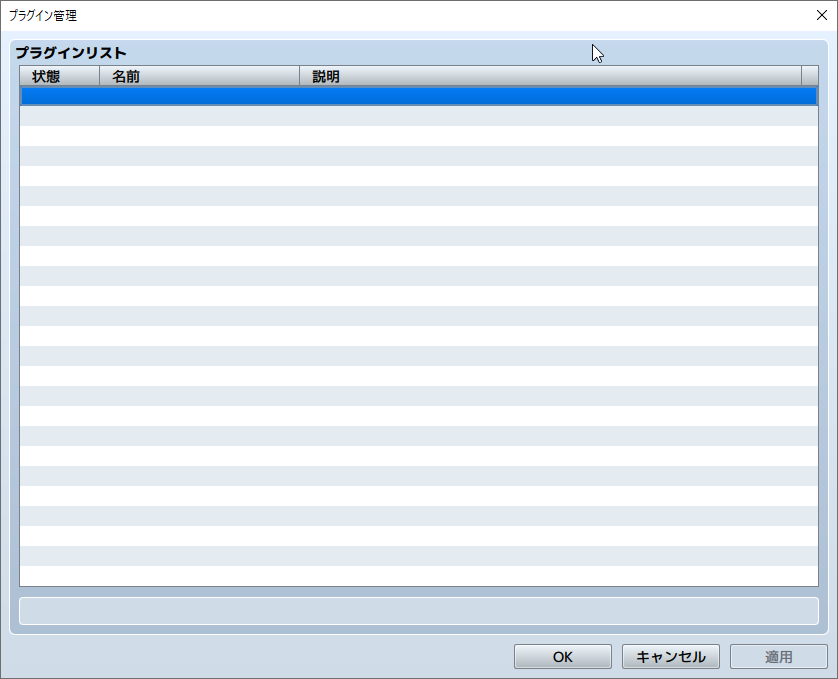
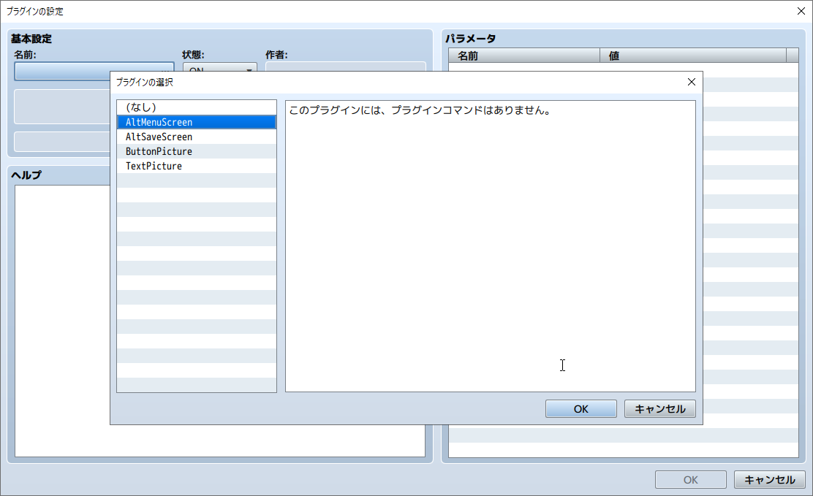
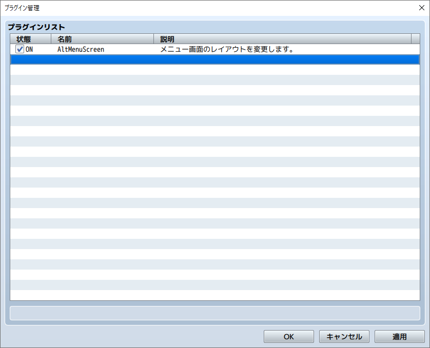
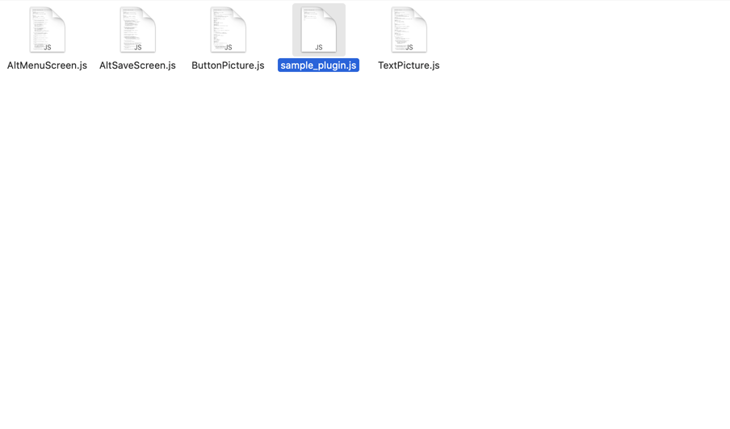
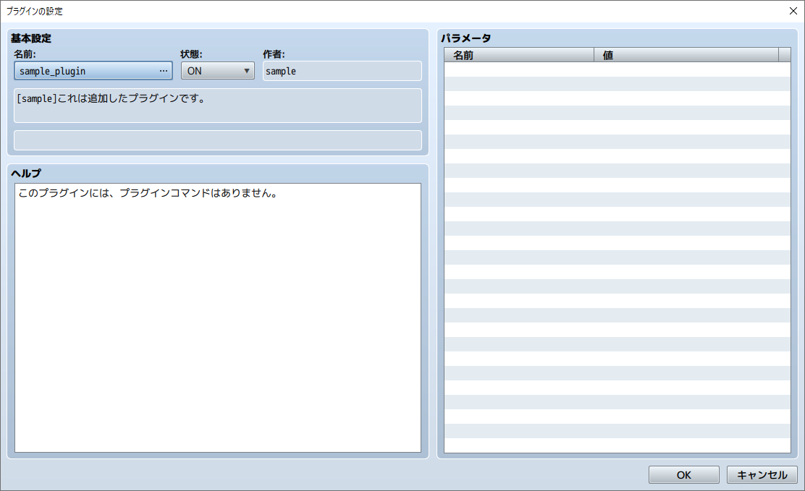
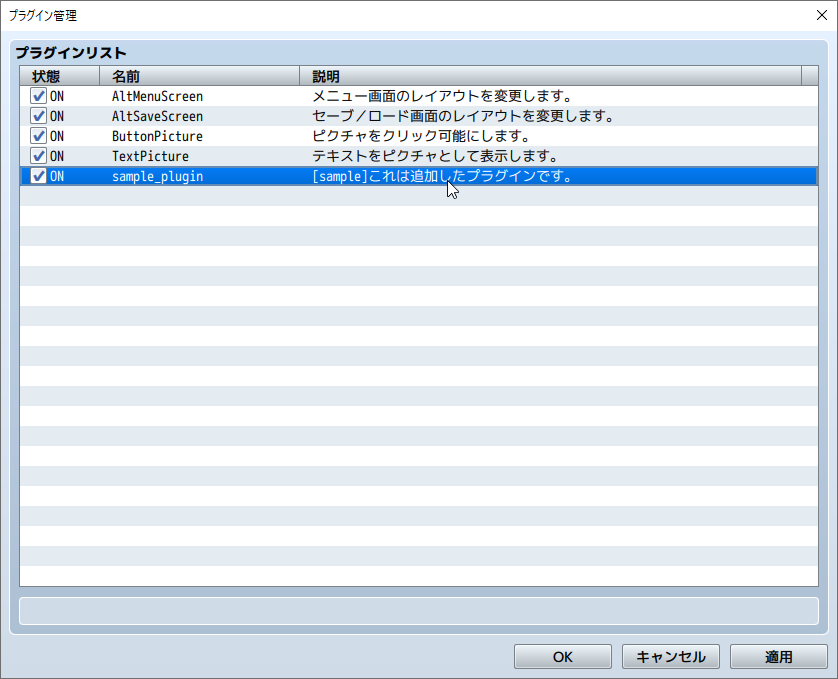

RPG TKOOL MZ HELP
資料集

プラグインを有効にする方法
RPGツクールMZでは、ユーザーにとってより使いやすいプラグイン機能が採用されています。
プラグインを有効にする方法
［ツール］の［プラグイン管理］を使用してプラグインを有効にします。
-
1. 空欄をダブルクリックします。
 -
2. 使用するプラグインを選択し、［OK］ボタンをクリックします。
 -
3. 選択したプラグインが一覧に表示されます。

公式以外のプラグインを追加する方法
プラグインを追加する場合は、プロジェクトフォルダの［js］→［plugins］フォルダに該当のプラグインのjsファイルをコピーした後、上記の手順で有効にしてください。
-
1. プロジェクトフォルダの［js］→［plugins］フォルダに該当のプラグインのjsファイルをコピーします。
 -
2. プラグイン管理の空欄をダブルクリックし、［名前］をクリックすると、追加したプラグイン名が表示されます。これを選択して［OK］をクリックします。
 -
3. 追加したプラグインが一覧に表示されます。

プラグインのON/OFFを切り替える
チェックボタンで一覧画面から簡単にプラグインのON/OFFを切り替えることができます。
プラグインを更新
プラグインのアップデート等を行う際、jsファイルを上書きした後で［更新］を選択すると、パラメータの設定情報および説明文の変更が反映されます。
Shiftキーでプラグインを複数選択して、一括で更新することが可能です。